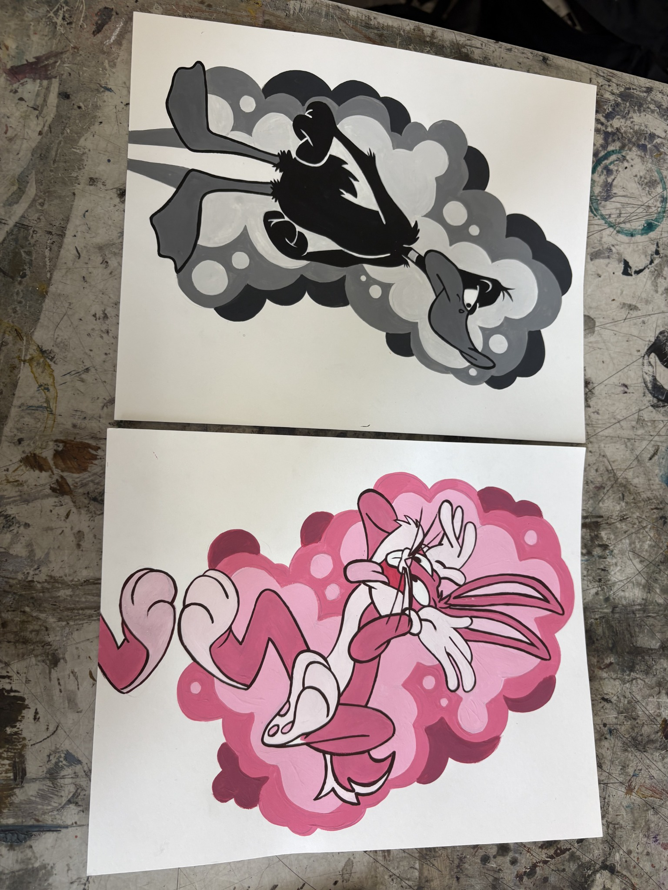

Illustration · Character study
Character Illustration
A collection of expressive character illustrations using bold outlines and color.

Project notes
The idea
These illustrations explore character, movement, and personality through simplified shapes, expressive poses, and graphic backgrounds. The contrast between the two pieces creates different moods while keeping a consistent hand-drawn style.